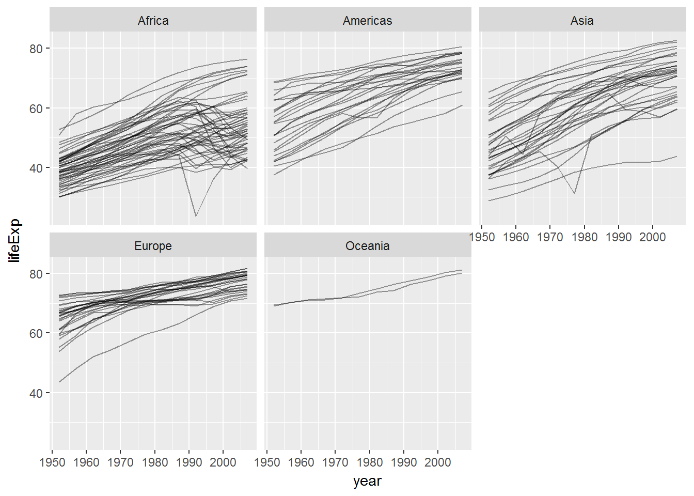

The course uses the R programming language (and several add-ons, so-called “packages”, including ggplot2).
In addition, this course heavily relies on the RStudio software environment to write and execute R scripts and to manage projects. The RStudio IDE (Integrated Development Environment) provides a number of important functions that make using R and ggplot2 easier which we will learn as the course progresses.
Finally, we will make use of a number of R packages from the so-called tidyverse. The tidyverse is a collection of packages that make reading, processing and transforming, modeling, and–most importantly for this course–data visualization much easier and straightforward.
Important: I assume that you will have installed or updated the following software and R packages, as we won’t have time during the workshop to do so.
Download the latest pre-compiled version of R from https://cran.r-project.org/ (both Windows/Mac/Linux binaries are available). The latest R version, as of this writing, is R 3.4.3. If you have R already installed, make sure that it’s version 3.3 or higher. If it’s lower than 3.3 you should update your R version. This can be a bit tricky, but the installr package helps with that. Instructions for updating R with the installr package can be found here: https://github.com/talgalili/installr/.
To install R, execute the downloaded binary and follow the instructions on the screen.
install.packages("tidyverse") # data management and visualization packages, incl. ggplot2
install.packages("readxl") # for reading Excel files
install.packages("haven") # for reading SPSS and Stata files
install.packages("gapminder") # example data sets
install.packages("dotwhisker") # coefficient plotsAfter following the above instructions, open RStudio (if it isn’t already open) and copy and paste the following into the R console and hit Enter.
library(tidyverse)
library(gapminder)
test_plot <- ggplot(gapminder, aes(x = year,
y = lifeExp,
group = country)) +
geom_line(alpha = 0.4) +
facet_wrap(~continent)
print(test_plot)This should produce the following plot:
